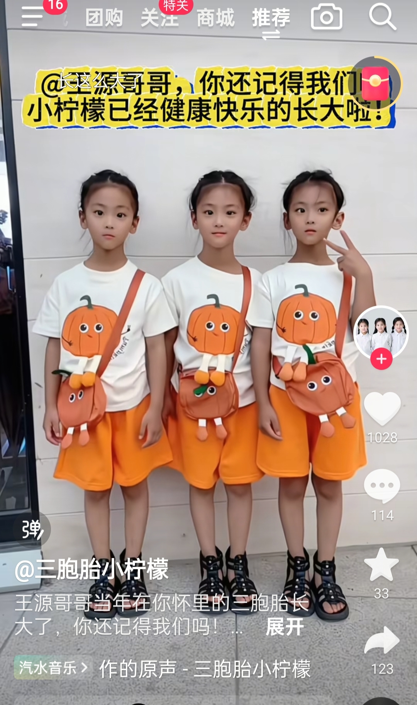
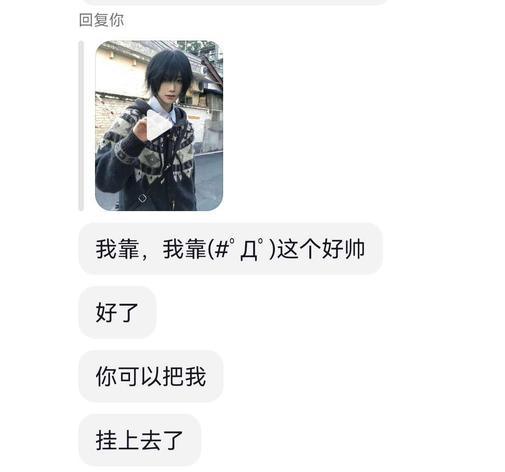
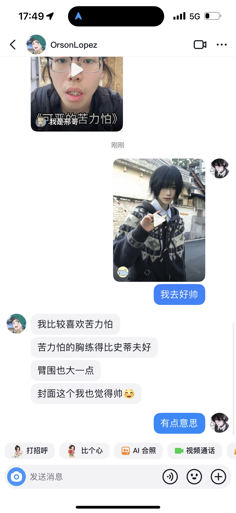
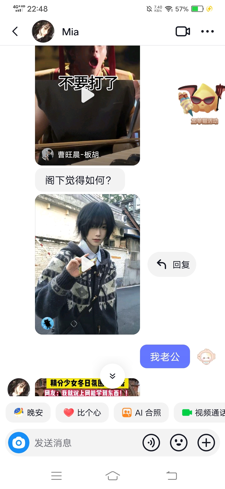
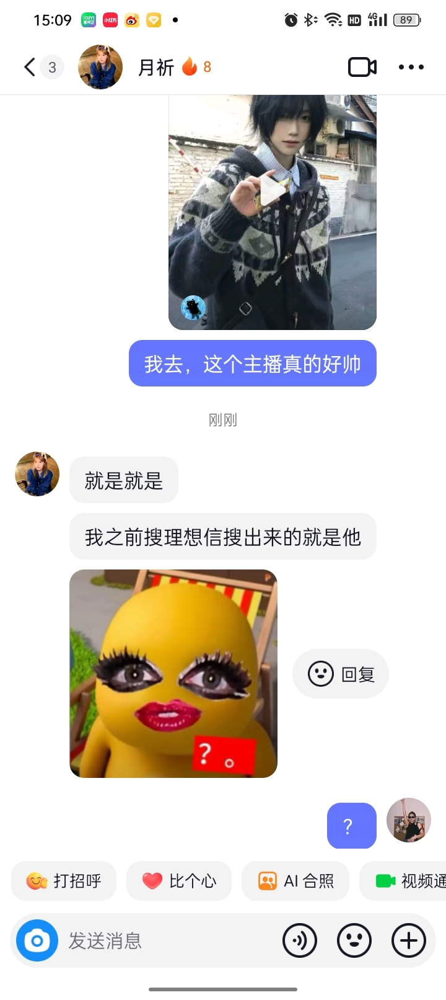
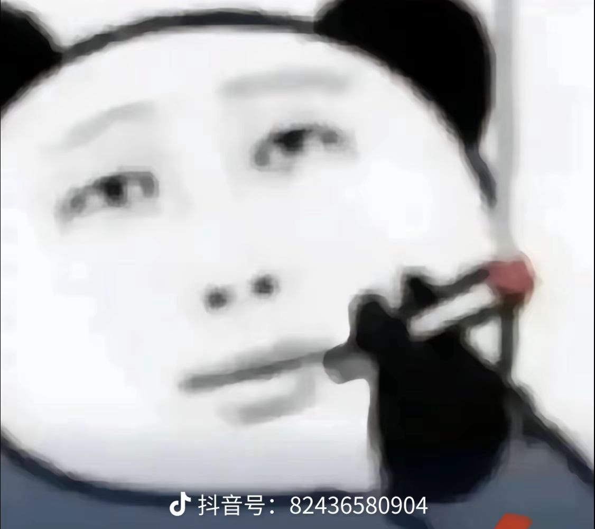
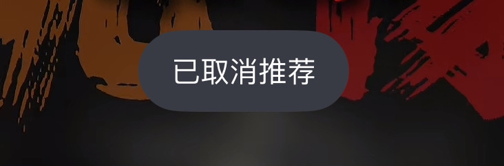

我说王源，你说鸟巢见[流泪]
天啊，这是王源吗，不是怎么和营销号说的不一样啊[发呆] 好听哎
非常喜欢王源的《世上没有真的感同身受》好听！很nice的人，而且三观很正
突然一个正常的评论区让我不敢相信，一直往上划[流泪]
“有些情绪是该说给懂的人听”这句话的含金量还在上升[流泪]
虽然但是这段真的很好听啊[捂脸]是那种娓娓道来的故事感，他很适合唱这种感觉的
王源唱歌挺好听的啊，真是被营销号害惨了[石化]
虽然王源唱的很好听 但是王源长得好漂亮啊（这是能说的吗）
超：因为有你这样的依靠
王源的声音太有诉说感和故事感，明明听的是歌脑海中却已经在演电影
从现在开始对王源改观[震惊]这个综艺什么时候可以看[猪头]
故意把手机扔床缝里听一天
王源声音好像清冽的小溪[流泪]
记得之前有个博主说，王源最可贵最吸引人的是他身上一点那种男的劣根性都没有。都说完美的人是兼顾两性特点的 我觉得他就是这样的人 他担得起事有棱角有脾性 他有那种男性的掌控力和处事风格的同时还具备一种通常女性才会有的柔性 包容性 细腻和共情能力。It is precisely because I have the ability to overcome this test that I have come
这哥们唱的这不是挺好吗 好听[鼓掌]
可是这个真的好听啊[流泪]没必要硬喷了吧[流泪]
在刷到哥哥的歌曲前一个视频刷到了被你救助的小柠檬三胞胎，冥冥之中的注定！“请容许我小小的骄傲，因为有你这样的依靠”这或许也是她们想对你说的话吧❤️ 
封面其实是女孩子哈
.？ 
[憨笑] 
你害死我了[憨笑] 
可以把封面换成《魔法使的新娘》吗，我想吓吓我那看小众动漫的朋友[憨笑]
谢谢主播，让我明白原来好友是这样的人[憨笑][比心] 
谈不上朴宝剑就谈你吧
从今天起 你叫朴宝刀[飞吻][飞吻]
纯情蟑螂火辣辣 今晚它来到你的家～
拒绝蟑螂可爱化[流泪][流泪]我恨大蟑螂[流泪][流泪]家里遥控器按键都被啃没了
虎头蜂
这五个老头，不管景天几点给他们打电话，他们都在一块 [抠鼻]
紫萱最爱的是顾留芳，最爱紫萱的是林业平，转世也不是同一个人，紫萱和龙葵不知道，只有夕瑶看清楚了
问：为什么美国的自动步枪只有三十发子弹 因为一个班只有三十个人[赞]
当你们学校有一个长期被欺负的小透明突然有一天带着一个吉他盒来到学校，并且叫你快走
终究还是用了A|技术进行了调色，虽是一瞬间，但还是很明显
[泪奔]一般等我画完另一半也发臭了
说白了 都直播了 还上班干嘛
要跑去操场跑。
我们老头子演唱会开完了手机一看微信步数两万八[强壮]
好有活力的一款老头[微笑][抱拳]
你好陶喆老师这里不让跑八百[微笑]
哈哈哈哈哈哈哈哈哈哈哈哈静静老师太有才了哈哈哈哈哈哈哈哈
生命如此短暂 怎么短暂怎么来
当我意识到自己在听什么的时候已经晚了[憨笑] 
我室友听完死了你知道吗？
谁懂粑粑出来那一刻的救赎感[憨笑]
… 
我都闭上眼睛准备回忆了，刚闭上一秒:粑粑[再见][再见]
听完后脑细胞顺着血液逃进胃酸自杀了
粑粑出来的那一刻我微博了
Read more: